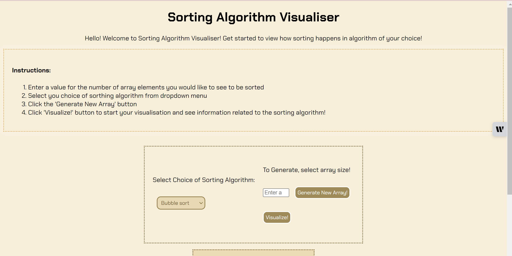
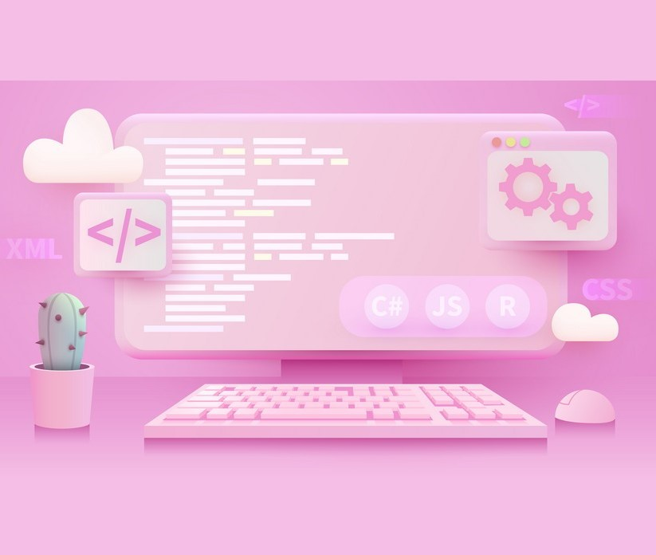

Projects
Gamin Trends Dashboard

The Gaming Trends Dashboard is a visually dynamic dashboard in Tableau to analyze key gaming metrics using a comprehensive dataset sourced from Kaggle. The dashboard focuses on player engagement such as tracking Daily Active Users (DAU), session durations, and Top Genres providing insights into the gaming industry to evaluate player activity and engagement levels effectively.
It also includes a detailed revenue analysis, visualizing monthly revenue trends and calculating growth rates to uncover financial patterns and opportunities. Additionally, stream viewership is analyzed, comparing audience engagement across platforms such as PC, Console, Mobile, and VR to highlight user preferences and platform-specific trends.
By utilizing advanced Tableau features like calculated fields, custom filters, and trend analytics, the dashboard delivers actionable insights and improves report clarity by 40%. Designed for gaming industry professionals, it empowers data-driven decision-making and demonstrates expertise in data visualization and storytelling tailored to the dynamic gaming sector.
Sorting Algorithm Visualizer
The Sorting Algorithm Visualizer is an interactive web application I developed to help users understand and visualize how different sorting algorithms work. Using HTML5, CSS, and JavaScript, I created a dynamic interface where users can see different algorithms in action.
The visualizer offers user controls to adjust the number of bars, generate new sets, and choose from Bubble Sort, Selection Sort, Quick Sort, and Count Sort. Real-time animations display how each algorithm processes and sorts the data, while additional information on time and space complexity is provided for the selected algorithm. This project combines theoretical concepts with practical visualization, making it an effective tool for learning and teaching sorting algorithms.
MNIST Handwritten Digit Identifier
This project involves building and training a neural network to classify handwritten digits from the MNIST dataset. The model is implemented using Keras, featuring multiple dense layers and dropout regularization. It predicts digit classes (0-9) based on grayscale images and achieves high accuracy by converting images to vectors and normalizing the data. The project includes visualizing model predictions to assess performance on individual test cases.
Huffman Code Generator
I designed and implemented a lossless data compression system using Huffman coding, showcasing advanced algorithmic problem-solving and data structure expertise. The project leverages binary trees and heap-based priority queues to efficiently encode and decode data, optimizing storage by 30%.
The system includes serialization and deserialization features to ensure 100% accurate text reconstruction. This functionality supports seamless data transfer and recovery, making the solution highly practical for real-world applications requiring efficient compression.
This project highlights proficiency in C++ programming, advanced data structures, and algorithm design, delivering a robust and effective compression solution with a focus on performance and reliability.
File Editor
In this project, I developed a Database Tracker and Editor using C, focusing on Object-Oriented Programming principles and efficient Data Structures. This program empowers users to interact with their data seamlessly by performing a variety of functions tailored to their needs. From editing existing records to generating enhanced user files, every action is designed to enhance data management efficiency and user experience.